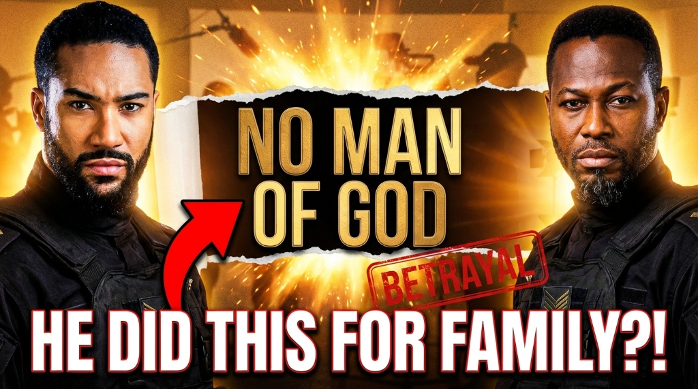

A Soldier's Redemption.
A Pastor's War.
Micheal, an ex–special forces soldier turned pastor, is forced to confront his violent past when his former comrades resurface, targeting a vulnerable family in his congregation to manipulate him.
After over a decade of being in an elite special unit force, Micheal, now a man of God, gets transferred back to Accra and is tracked down by his former partners who want him to give them the coordinates to some hidden natural minerals. They use one family in his church as bait to get to him. Micheal now fights to free the family from his former friends as he is more attached to them than most — in many ways.
"Can a man truly leave violence behind?"
